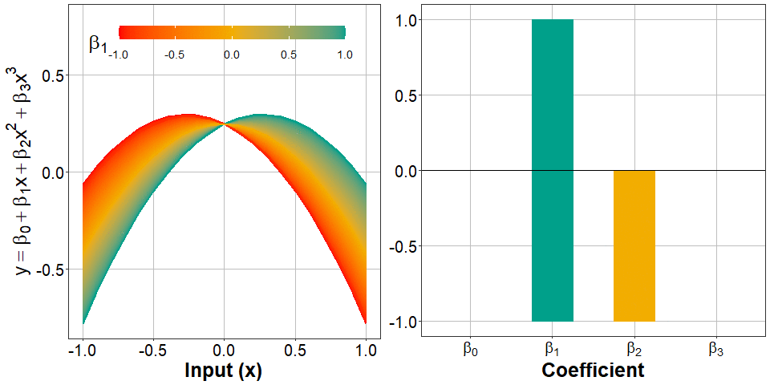
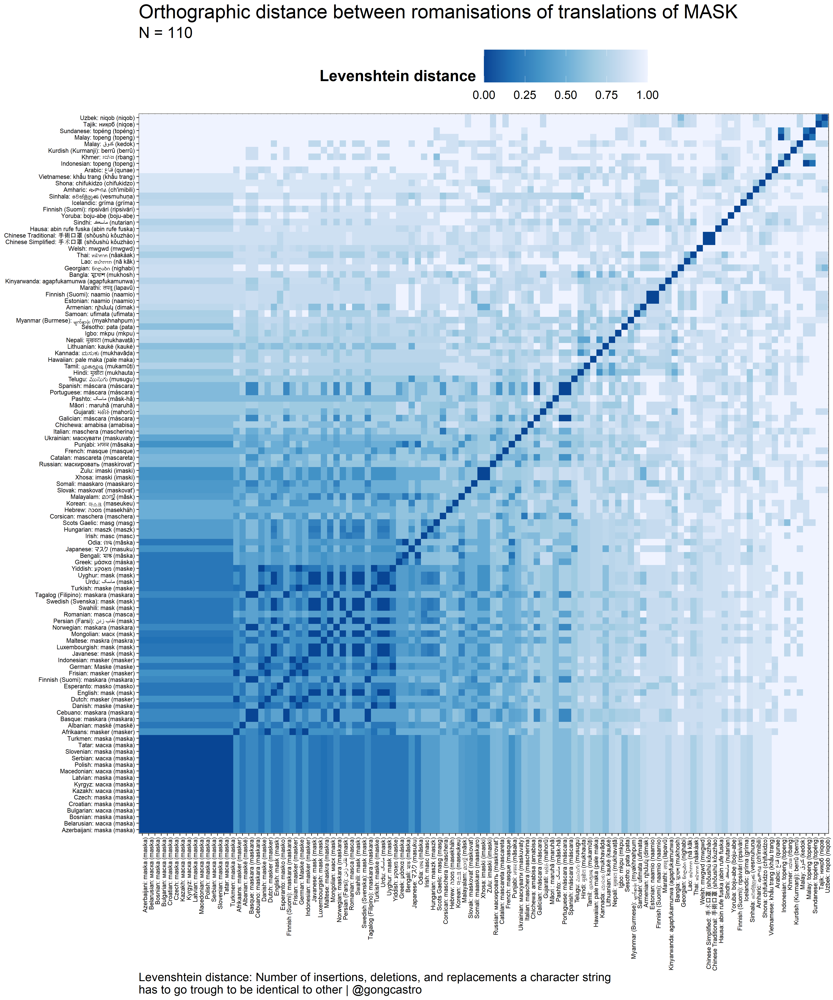

Gonzalo García-Castro
Home
About
CV
Blog
Language, statistics, R
Blog
renv (o cómo usar paquetes de R sin ataques de pánico)
renv
es un paquete de R que permite instalar paquetes de R gestionar sus versiones para proyectos de forma independiente. Aqui resumo para qué se utiliza y cómo funciona.
Feb 27, 2022
@psicotuiterbot: Un bot de Twitter para Psicotuiter
He creado un bot de Twitter que hace RT a cualquier mención a #psicotuiter. El código está escrito en R usando el paquete {rtweet} para interactuar con la API de Twitter, y…
Dec 29, 2021
Creando un paquete de R: una guía informal (I)
En el canal de Twitch de Alicia,
Psicometries
hicimos un
directo
en el que explicamos cómo se ha…
Nov 14, 2021
Exploring probability distributions through animations in Julia
Visualising what different
probability distributions
look like under different parameters can be helpful when picking a likelihood function for you Bayesian analysis. I…
Oct 4, 2021

Visualising polynomial regression
The outputs of polynomial regression can be difficult to interpret. I generated some animated plots to see how model predictions change across different combinations of…
Jan 21, 2021

How similar is the word “mask” across languages?
Using the Levenshtein distance to quantify the orthographic and phonlogical similarity between translation equivalents of the word
mask
across multiple languages.
Nov 20, 2020
Importing data from multiple files simultaneously in R
A comparison between base R and Tidyverse methods for importing data from multiple files
Jul 5, 2020
A primer on Mixed-Effects Models: Theory and practice
Slides from a tutorial on mixed-effects models I presented to my research group.
Mar 31, 2020
No matching items